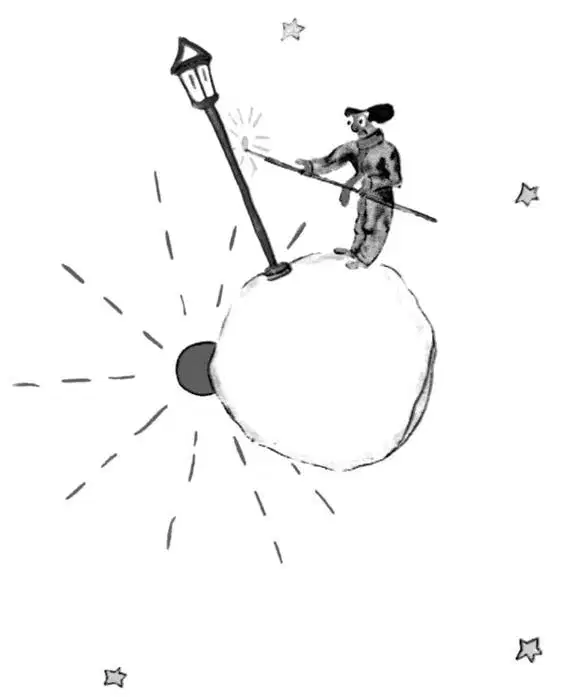

CHAPTER 14
第十四章
—the little prince visits the lamplighter
——小王子拜访点灯人
The fifth planet was very strange. It was the smallest of all. There was just enough room on it for a street lamp and a lamplighter. The little prince was not able to reach any explanation of the use of a street lamp and a lamplighter, somewhere in the heavens, on a planet which had no people, and not one house. But he said to himself, nevertheless:
第五个星球非常地奇怪。它是所有星球中最小的一个。星球上刚好容得下一盏街灯和一个点灯人。小王子不能理解，在宇宙的某个地方，一个没有人、没有一座房子的星球上，一盏街灯和一个点灯人有什么用处。可是不管怎样，他想：
"It may well be that this man is absurd. But he is not so absurd as the king, the conceited man, the businessman, and the tippler. For at least his work has some meaning. When he lights his street lamp, it is as if he brought one more star to life, or one flower. When he puts out his lamp, he sends the flower, or the star, to sleep. That is a beautiful occupation. And since it is beautiful, it is truly useful."
“很可能这个人疯了。可他不像那个国王、那个自大狂、那个商人和那个酒鬼一样荒谬。因为，至少他的工作还是有意义的。他点起街灯，就好像给生活带来了一颗星星，或是一朵花。他把灯熄灭，就是将花儿，抑或是星星带入了梦乡。那是一个多么美好的职业。因为它美好，它就是真正有用的。”
When he arrived on the planet he respectfully saluted the lamplighter.
当小王子到达这个星球时，他尊敬地向点灯人致意。
"Good morning. Why have you just put out your lamp?"
“早上好。为什么你把灯熄了呢？”
"Those are the orders," replied the lamplighter. "Good morning."
“那是命令。”点灯人回答说，“早上好。”
"What are the orders?"
“什么命令啊？”

"The orders are that I put out my lamp. Good evening."
“命令就是要我把灯熄灭。晚上好。”
And he lighted his lamp again.
然后他又把灯点亮。
"But why have you just lighted it again?"
“可你为什么又点亮它呢？”
"Those are the orders," replied the lamplighter.
“这也是命令。”点灯人回答。
"I do not understand," said the little prince.
“我不明白。”小王子说。
"There is nothing to understand," said the lamplighter. "Orders are orders. Good morning."
“没有什么不可理解的。”点灯人说，“命令就是命令。早上好。”
And he put out his lamp.
他又把灯灭了。
Then he mopped his forehead with a handkerchief decorated with red squares.
然后，他用一个饰有红方格的手绢擦了擦额头。
"I follow a terrible profession. In the old days it was reasonable. I put the lamp out in the morning, and in the evening I lighted it again. I had the rest of the day for relaxation and the rest of the night for sleep."
“我从事的是一个可怕的职业。以前还比较合乎情理。我早上把灯熄灭，傍晚又将它点燃。其余时间，白天歇着，晚上睡觉。”
"And the orders have been changed since that time?"
“后来，命令就变了吗？”
"The orders have not been changed," said the lamplighter. "That is the tragedy! From year to year the planet has turned more rapidly and the orders have not been changed!"
“命令没有变。”点灯人说。“悲就悲在这里啊！年复一年，星球转得越来越快了，可是命令却始终没变！”
"Then what?" asked the little prince.
“后来怎样了呢？”小王子问。
"Then—the planet now makes a complete turn every minute, and I no longer have a single second for repose. Once every minute I have to light my lamp and put it out!”
“后来——现在，星球一分钟就转了一圈，我连一秒钟也不能停歇。每过一分钟，我就得把灯点亮一次，然后再熄灭一次！”
"That is very funny! A day lasts only one minute, here where you live!"
“好有趣哦！你住的这个地方，一天只持续一分钟！”
"It is not funny at all!" said the lamplighter. "While we have been talking together a month has gone by."
“一点都没趣！”点灯人说。“我们两个聊着聊着，一个月就过去了。”
"A month?"
“一个月？”
"Yes, a month. Thirty minutes. Thirty days. Good evening."
“是啊，一个月。三十分钟。就是三十天啊。晚上好。”
And he lighted his lamp again.
然后他又把灯点亮。
As the little prince watched him, he felt that he loved this lamplighter who was so faithful to his orders. He remembered the sunsets which he himself had gone to seek, in other days, merely by pulling up his chair; and he wanted to help his friend.
小王子看着他，觉得他喜欢起这个点灯人来，他对命令是如此虔诚。小王子想起了自己以前寻找日落时，只须挪动下椅子就能看到；他想帮助他的这位朋友。
"You know," he said, "I can tell you a way you can rest whenever you want to..."
“你知道吗？”小王子说，“我能告诉你一个方法，只要你想休息就能办到……”
"I always want to rest," said the lamplighter.
“我一直都想休息。”点灯人说。
For it is possible for a man to be faithful and lazy at the same time.
因为，一个人是可以兼顾恪守命令和休息的。
The little prince went on with his explanation:
小王子继续解释说：
"Your planet is so small that three strides will take you all the way around it. To be always in the sunshine, you need only walk along rather slowly. When you want to rest, you will walk—and the day will last as long as you like.”
“你的星球这么小，三步就能走完了。想要一直呆在阳光下，你只须慢慢地散步就可以做到。你想休息的时候，就可以散步——这样，你想要一天持续多久都可以。”
"That doesn't do me much good," said the lamplighter. "The one thing I love in life is to sleep."
“这对我没有什么好处。”点灯人说。“生活中我爱做的事只有一件，就是睡觉。”
"Then you're unlucky," said the little prince.
“那么你很不幸。”小王子说。
"I am unlucky," said the lamplighter. "Good morning."
“我是很不幸。”点灯人说。“早上好。”
And he put out his lamp.
他把灯熄了。
"That man," said the little prince to himself, as he continued farther on his journey, "that man would be scorned by all the others: by the king, by the conceited man, by the tippler, by the businessman. Nevertheless he is the only one of them all who does not seem to me ridiculous. Perhaps that is because he is thinking of something else besides himself.”
“那个人，”小王子边继续赶路边想，“那个人会遭到所有人的耻笑，包括那个国王、那个自大狂、那个酒鬼，还有那个商人。然而，他们所有人当中，他是唯一一个我不觉得荒谬的人。或许是因为，除了他自己，他还想着别的事情。”
He breathed a sigh of regret, and said to himself, again:
他懊悔地叹了口气，又自言自语说：
"That man is the only one of them all whom I could have made my friend. But his planet is indeed too small. There is no room on it for two people..."
“那个人是他们当中唯一一个可以做我朋友的人。可是他的星球的确太小了。那里容不下两个人……”
What the little prince did not dare confess was that he was sorry most of all to leave this planet, because it was blest every day with 1440 sunsets!
有一点小王子不敢承认，离开这个星球最让他遗憾的是，在那儿每天都能看到1440次日落！